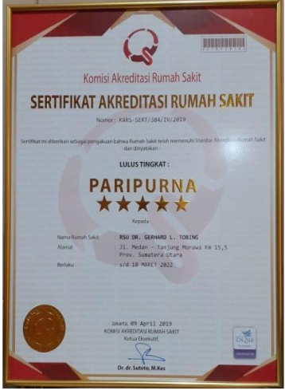

About Us
Sejarah
Rumah Sakit dr. Gerhard Lumban Tobing atau disingkat menjadi RSGL Tobing (dan familiar sebagai RSGL Tobing) adalah sarana kesehatan milik PT Tembakau Deli Medica anak perusahaan dari PTP Nusantara II yang didirikan tahun 1882 pada zaman penjajahan Belanda oleh perusahaan perkebunan Senembah Maatschappij dengan nama Hospital De Tanjong Morawa.
SelengkapnyaSejarah RSU.dr.GL.Tobing

Rumah Sakit dr. Gerhard Lumban Tobing atau disingkat menjadi RSGL Tobing (dan familiar sebagai RSGL Tobing) adalah sarana kesehatan milik PT Tembakau Deli Medica anak perusahaan dari PTP Nusantara II yang didirikan tahun 1882 pada zaman penjajahan Belanda oleh perusahaan perkebunan Senembah Maatschappij dengan nama Hospital De Tanjong Morawa.
Setelah kemerdekaan Republik Indonesia, perusahaan Senembah Maatschappij menjadi milik pemerintah Indonesia dan mengalami beberapa kali perubahan nama.Nama yang pernah digunakan antara lain adalah PNP II,yang kemudian pada tahun 1969 berubah menjadi PT Perkebunan II Tanjung Morawa.Hospital De Tanjong Morawa pun turut mengalami beberapa kali perubahan nama, antara lain menjadi Rumah Sakit dr.G.L Tobing PNP II Tanjung Morawa.
Berdasarkan Surat Keputusan Nomor II.0/kpts/3/1969 yang ditandatangani Direktur Utama PTPN II kala itu, MD Nasution, nama Rumah Sakit PNP II Tanjung Morawa ditetapkan sebagai Rumah Sakit dr.Gerhard Lumbal Tobing PTP II Tanjung Morawa. Penggabungan (restrukturisasi) antara PT Perkebunan II dengan PT Perkebunan IX menjadi PT Perkebunan Nusantara II (Persero) atau PTPN II pada tahun 1996, sehingga RS dr G.L Tobing sendiripun menjadi unit dari PT Perkebunan Nusantara II (Persero). Pada awal tahun 2012,atas kebijakan Direksi PTPN II izin operasional RS Tembakau Deli yang merupakan salah satu unit RS PTPN II dihentikan dan bergabung ke RS dr.G.L Tobing.Sehingga terjadi perubahan struktur organisasi dan penambahan jenis pelayanan kesehatan di RSGL.
Berbagai proses yang telah dilalui untuk menjadikan badan usaha mandiri terhadap rumah sakit - rumah sakit PTPN II.Pada tanggal 2 Juni 2017 terbentuklah PT Tembakau Deli Medica sebagai anak perusahaan dari PTP Nusantara II berdasarkan Akta Pendirin Perseroan Terbatas No 06 yang mempunyai 3 unit usaha bidang perumahsakitan ( RS dr.G.L Tobing,RS Bangkatan, dan RS dr.G.L Tobing) dan FKTP-FKTP yang tersebar di seluruh kebun PTPN II
VISI & MISI
1. Menyelenggarakan pelayanan kesehatan yang berbasis pada patient safety.
2. Melaksanakan manajemen rumah sakit secara professional.
3. Membangun kepercayaan pelanggan melalui sumber dayamanusia yang professional, berkualitas dan berbudaya kerja prima.
4. Memberikan kontribusi yang optimal bagi perusahaan maupun masyarakat sekitar
5. Menjaga dan memelihara kelestarian lingkungan serta menciptakan nilai tambah
find_in_pageINFOTUJUAN & MOTTO
find_in_pageINFOSTRUKTUR ORGANISASI
find_in_pageINFO